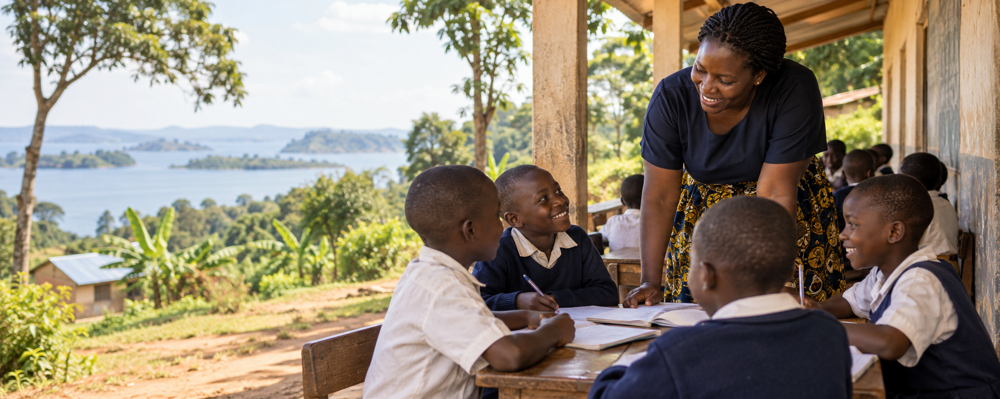
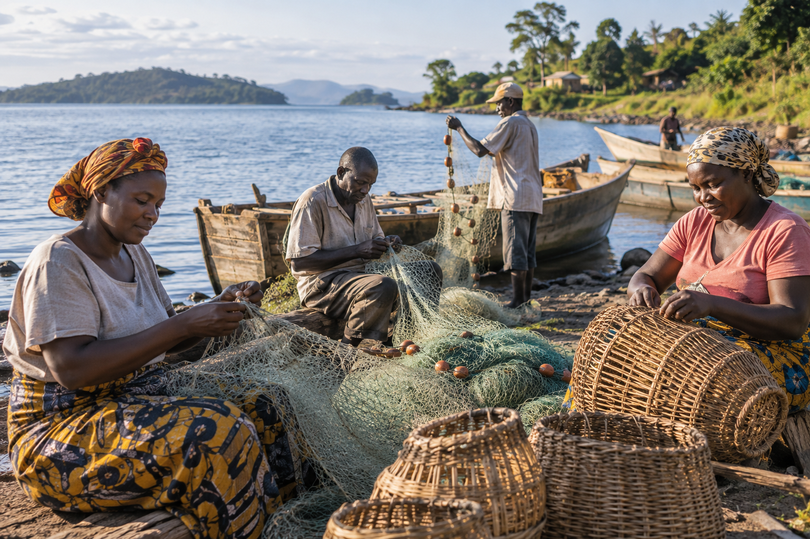

Education
Learning & scholarships
Planned support for disadvantaged learners, girls and persons with disabilities.
Explore →Buvuma District · Uganda
Goodwill Educational Initiative UG Ltd works on non-profit principles to expand access to education, practical skills, responsible livelihood support and stronger community services.

Sample image · replace with approved GEI photography01 / Our purpose
GEI Uganda connects education with the everyday realities of island communities.
Its intended work spans learning, skills, livelihoods, health support and community infrastructure in Buvuma District and across Uganda.
02 / Flagship programme
GERF is a planned, non-profit revolving fund intended to support education and responsible livelihoods.
Understand the proposed fund →03 / Programme areas
Education
Planned support for disadvantaged learners, girls and persons with disabilities.
Explore →Skills
Proposed practical training across construction, IT, agriculture, tailoring and enterprise.
Explore →Community
Respectful health education, water and sanitation, learning hubs and facility support.
Explore →
Communities served
Work shaped around learners, households, farmers, fishers and local communities.

Inclusion
Planned support includes women, girls and persons with disabilities.
04 / Partnership
GEI Uganda welcomes conversations with schools, government, community organisations, NGOs, businesses, trainers, volunteers and development partners.
Explore partnership →05 / News placeholders
Placeholder for a verified programme update.
Placeholder for an approved community story.
Dates and locations will appear after confirmation.
Start a conversation
Contact Mayanja Charles, Fund Manager, for organisational and partnership enquiries.
Email GEI Uganda ↗